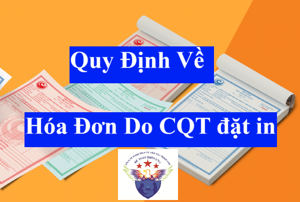

Quy định về hóa đơn do cơ quan thuế đặt in, phát hành, cấp bán theo Doanh nghiệp, tổ chức kinh tế, hộ, cá nhân kinh doanh mới nhất năm 2025
1. Đối tượng mua hóa đơn do cơ quan thuế đặt in
Theo điều 23 của Nghị định 123/2020/NĐ-CP thì:
Cục Thuế các tỉnh, thành phố trực thuộc Trung ương (sau đây gọi là Cục Thuế) đặt in hóa đơn để bán cho các đối tượng sau:
1. Doanh nghiệp, tổ chức kinh tế, hộ kinh doanh, cá nhân kinh doanh quy định tại khoản 1 Điều 14 Nghị định 123/2020/NĐ-CP trong trường hợp doanh nghiệp, tổ chức kinh tế, hộ, cá nhân kinh doanh không thực hiện giao dịch với cơ quan thuế bằng phương tiện điện tử, không có hạ tầng công nghệ thông tin, không có hệ thống phần mềm kế toán, không có phần mềm lập hóa đơn điện tử để sử dụng hóa đơn điện tử và để truyền dữ liệu hóa đơn điện tử đến người mua và đến cơ quan thuế.
Trong đó: khoản 1 Điều 14 Nghị định 123/2020/NĐ-CP như sau:
Điều 14. Cung cấp dịch vụ hóa đơn điện tử
1. Trường hợp sử dụng hóa đơn điện tử có mã của cơ quan thuế không phải trả tiền dịch vụ trong thời gian 12 tháng kể từ khi bắt đầu sử dụng hóa đơn điện tử gồm:
a) Doanh nghiệp nhỏ và vừa, hợp tác xã, hộ, cá nhân kinh doanh tại địa bàn có điều kiện kinh tế - xã hội khó khăn, địa bàn có điều kiện kinh tế - xã hội đặc biệt khó khăn. Địa bàn có điều kiện kinh tế - xã hội khó khăn, địa bàn có điều kiện kinh tế - xã hội đặc biệt khó khăn thực hiện theo Danh mục địa bàn ưu đãi đầu tư ban hành kèm theo Nghị định số 118/2015/NĐ-CP ngày 12 tháng 11 năm 2015 của Chính phủ quy định chi tiết và hướng dẫn thi hành một số điều của Luật Đầu tư và các văn bản sửa đổi, bổ sung hoặc thay thế nếu có.
b) Doanh nghiệp nhỏ và vừa khác theo đề nghị của Ủy ban nhân dân tỉnh, thành phố trực thuộc Trung ương gửi Bộ Tài chính trừ doanh nghiệp hoạt động tại các khu kinh tế, khu công nghiệp, khu công nghệ cao.
Tổng cục Thuế thực hiện hoặc ủy thác cho tổ chức cung cấp dịch vụ về hóa đơn điện tử thực hiện cung cấp hóa đơn điện tử có mã của cơ quan thuế không phải trả tiền dịch vụ cho các đối tượng nêu trên.
Doanh nghiệp, tổ chức kinh tế, hộ kinh doanh, cá nhân kinh doanh mua hóa đơn của cơ quan thuế trong thời gian tối đa 12 tháng, đồng thời cơ quan thuế có giải pháp chuyển đổi dần sang áp dụng hóa đơn điện tử. Khi chuyển sang sử dụng hóa đơn điện tử thì các doanh nghiệp, tổ chức kinh tế, hộ kinh doanh, cá nhân kinh thực hiện đăng ký sử dụng hóa đơn điện tử có mã của cơ quan thuế hoặc hóa đơn điện tử không có mã của cơ quan thuế (nếu đủ điều kiện) theo quy định tại Điều 15 Nghị định 123/2020/NĐ-CP.
Trong đó: Điều 15 Nghị định 123/2020/NĐ-CP quy định về việc Đăng ký, thay đổi nội dung đăng ký sử dụng hóa đơn điện tử và đã được bổ sung bởi Điểm b Khoản 11 Điều 1 Nghị định 70/2025/NĐ-CP có hiệu lực từ ngày 01/06/2025
Chi tiết các bạn xem tại đây: Đăng ký sử dụng hóa đơn điện tử theo nghị định 70/2025
2. Doanh nghiệp, tổ chức kinh tế, hộ kinh doanh, cá nhân kinh doanh trong thời gian hệ thống hạ tầng công nghệ thông tin cấp mã hóa đơn của cơ quan thuế gặp sự cố theo quy định tại khoản 2 Điều 20 Nghị định 123/2020/NĐ-CP.
Trong đó: khoản 2 Điều 20 Nghị định 123/2020/NĐ-CP như sau:
Điều 20. Xử lý sự cố đối với hóa đơn điện tử có mã của cơ quan thuế
...
2. Trường hợp hệ thống cấp mã của cơ quan thuế gặp sự cố, Tổng cục Thuế thực hiện các giải pháp kỹ thuật chuyển sang hệ thống dự phòng và có trách nhiệm thông báo trên Cổng thông tin điện tử của Tổng cục Thuế về các sự cố nêu trên. Tổng cục Thuế lựa chọn một số tổ chức cung cấp dịch vụ về hóa đơn điện tử có đủ điều kiện để ủy quyền cấp mã hóa đơn điện tử trong trường hợp hệ thống của cơ quan thuế gặp sự cố.
Trường hợp trong thời gian chưa khắc phục được sự cố của cơ quan thuế thì cơ quan thuế có giải pháp bán hóa đơn do cơ quan thuế đặt in cho một số tổ chức, cá nhân để sử dụng. Sau khi hệ thống cấp mã của cơ quan thuế được khắc phục, cơ quan thuế thông báo để các tổ chức, cá nhân tiếp tục sử dụng hóa đơn điện tử có mã của cơ quan thuế chậm nhất 02 ngày làm việc kể từ thời hạn ghi trên thông báo của cơ quan thuế, tổ chức, cá nhân gửi báo cáo tình hình sử dụng hóa đơn giấy đã mua của cơ quan thuế theo Mẫu số BC26/HĐG Phụ lục IA ban hành kèm theo Nghị định này.
2. Quy định về bán hóa đơn do cơ quan thuế đặt in
Theo điều 24 của Nghị định 123/2020/NĐ-CP thì:
1. Doanh nghiệp, tổ chức kinh tế, hộ kinh doanh, cá nhân kinh thuộc đối tượng được cơ quan thuế bán hóa đơn phải có đơn đề nghị mua hóa đơn (theo Mẫu số 02/ĐN-HĐG Phụ lục IA ban hành kèm theo Nghị định 123/2020/NĐ-CP) gửi cơ quan thuế khi mua hóa đơn và kèm theo các giấy tờ sau:
a) Người mua hóa đơn (người có tên trong đơn hoặc người được doanh nghiệp, tổ chức kinh doanh, chủ hộ kinh doanh, người được ủy quyền bằng giấy ủy quyền theo quy định của pháp luật) phải xuất trình giấy chứng minh nhân dân hoặc thẻ căn cước công dân còn trong thời hạn sử dụng theo quy định của pháp luật;
b) Doanh nghiệp, tổ chức kinh tế, hộ kinh doanh, cá nhân kinh mua hóa đơn lần đầu phải có văn bản cam kết (theo Mẫu số 02/CK-HĐG Phụ lục IA ban hành kèm theo Nghị định này) về địa chỉ sản xuất, kinh doanh phù hợp với giấy chứng nhận đăng ký doanh nghiệp, giấy chứng nhận đăng ký doanh nghiệp, giấy chứng nhận đăng ký hoạt động chi nhánh, giấy chứng nhận đăng ký hộ kinh doanh, giấy chứng nhận đăng ký thuế, thông báo mã số thuế, giấy chứng nhận đăng ký đầu tư, giấy chứng nhận đăng ký hợp tác xã hoặc quyết định thành lập của cơ quan có thẩm quyền;
c) Khi đến mua hóa đơn, doanh nghiệp, tổ chức kinh tế, hộ kinh doanh, cá nhân kinh mua hóa đơn do cơ quan thuế phát hành phải tự chịu trách nhiệm ghi hoặc đóng dấu: tên, địa chỉ, mã số thuế trên liên 2 của mỗi số hóa đơn trước khi mang ra khỏi cơ quan thuế.
2. Cơ quan thuế bán hóa đơn cho doanh nghiệp, tổ chức kinh tế, hộ kinh doanh, cá nhân kinh theo tháng.
Số lượng hóa đơn bán cho doanh nghiệp, tổ chức kinh tế, hộ kinh doanh, cá nhân kinh lần đầu không quá một quyển 50 số cho mỗi loại hóa đơn. Trường hợp chưa hết tháng đã sử dụng hết hóa đơn mua lần đầu, cơ quan thuế căn cứ vào thời gian, số lượng hóa đơn đã sử dụng để quyết định số lượng hóa đơn bán lần tiếp theo.
Đối với các lần mua hóa đơn sau, sau khi kiểm tra tình hình sử dụng hóa đơn, tình hình kê khai nộp thuế và đề nghị mua hóa đơn trong đơn đề nghị mua hóa đơn, cơ quan thuế giải quyết bán hóa đơn cho doanh nghiệp, tổ chức kinh tế, hộ kinh doanh, cá nhân kinh trong ngày. Số lượng hóa đơn bán cho doanh nghiệp, tổ chức kinh tế, hộ kinh doanh, cá nhân kinh không quá số lượng hóa đơn đã sử dụng của tháng mua trước đó.
Doanh nghiệp, tổ chức kinh tế, hộ kinh doanh, cá nhân kinh thuộc đối tượng mua hóa đơn do cơ quan thuế phát hành chuyển sang sử dụng hóa đơn điện tử thì phải dừng sử dụng hóa đơn mua của cơ quan thuế kể từ ngày bắt đầu sử dụng hóa đơn điện tử theo quy định tại Điều 15 Nghị định 123/2020/NĐ-CP.
Trường hợp hộ kinh doanh, cá nhân kinh không có nhu cầu sử dụng hóa đơn quyển nhưng có nhu cầu sử dụng hóa đơn thì cơ quan thuế cấp hóa đơn điện tử theo từng lần phát sinh theo quy định tại khoản 2 Điều 13 Nghị định 123/2020/NĐ-CP.
3. Hóa đơn do Cục Thuế đặt in để bán được thông báo công khai trên Cổng thông tin điện tử của Tổng cục Thuế và trước khi bán lần đầu Cục Thuế phải lập thông báo phát hành hóa đơn theo Mẫu số 02/PH-HĐG Phụ lục IB Nghị định 123/2020/NĐ-CP đính kèm hóa đơn Mẫu trên Cổng thông tin điện tử của Tổng cục Thuế.
Nội dung Thông báo phát hành hóa đơn gồm: Tên Cục Thuế phát hành hóa đơn, mã số thuế, địa chỉ, điện thoại, các loại hóa đơn phát hành (tên loại hóa đơn, ký hiệu hóa đơn, ký hiệu mẫu số hóa đơn, ngày bắt đầu sử dụng, số lượng hóa đơn thông báo phát hành (từ số... đến số...)), tên và mã số thuế của doanh nghiệp in hóa đơn (đối với hóa đơn đặt in); ngày lập Thông báo phát hành, tên, chữ ký của người đại diện theo pháp luật và dấu của đơn vị.
Hóa đơn mẫu là bản in thể hiện đúng, đủ các tiêu thức trên liên của hóa đơn giao cho người mua loại được phát hành, có số hóa đơn là một dãy các chữ số 0 và in hoặc đóng chữ “Mẫu” trên tờ hóa đơn.
Thông báo phát hành hóa đơn gồm cả hóa đơn mẫu phải được niêm yết rõ ràng ngay tại các cơ sở trực thuộc Cục Thuế trong suốt thời gian sử dụng hóa đơn.
Trường hợp có sự thay đổi về nội dung đã thông báo phát hành hoặc mẫu hóa đơn Cục Thuế phải thực hiện thủ tục thông báo phát hành mới theo quy định tại Điều này.
4. Hóa đơn giấy do Cục Thuế đặt in được bán theo giá bảo đảm bù đắp chi phí thực tế, không vì mục tiêu lợi nhuận. Cục trưởng Cục Thuế quyết định và niêm yết giá bán hóa đơn theo nguyên tắc trên, cơ quan thuế các cấp không được thu thêm bất kỳ khoản thu nào ngoài giá bán đã niêm yết. Tất cả các đơn vị trực thuộc Cục Thuế bán, cấp cùng một loại hóa đơn do Cục Thuế phát hành.
3. Mẫu hóa đơn do cơ quan thuế đặt in
Công ty đào tạo Kế Toán Diệu Tâm mời các bạn xem chi tiết tại đây:
1. Mẫu hóa đơn giá trị gia tăng do Cục Thuế đặt in phát hành
2. Mẫu Hóa đơn bán hàng do Cục Thuế phát hành đặt in
1. Mẫu hóa đơn giá trị gia tăng do Cục Thuế đặt in phát hành
2. Mẫu Hóa đơn bán hàng do Cục Thuế phát hành đặt in
4. Tên liên hóa đơn áp dụng đối với hóa đơn do cơ quan thuế đặt in
Thực hiện theo hướng dẫn của Bộ Tài chính: tại Khoản 2 Điều 5 Thông tư 32/2025/TT-BTC như sau:
Hóa đơn do Chi cục Thuế đặt in
a) Ký hiệu mẫu số hóa đơn do Chi cục Thuế đặt in là một nhóm gồm 11 ký tự thể hiện các thông tin về: tên loại hóa đơn, số liên, số thứ tự mẫu trong một loại hóa đơn (một loại hóa đơn có thể có nhiều mẫu), cụ thể như sau:
- Sáu (06) ký tự đầu tiên thể hiện tên loại hóa đơn:
+ 01GTKT: Hóa đơn giá trị gia tăng;
+ 02GTTT: Hóa đơn bán hàng;
+ 07KPTQ: Hóa đơn bán hàng dành cho tổ chức, cá nhân trong khu phi thuế quan;
+ 03XKNB: Phiếu xuất kho kiêm vận chuyển nội bộ;
+ 04HGDL: Phiếu xuất kho hàng gửi bán đại lý.
- Một (01) ký tự tiếp theo là các số tự nhiên 1, 2, 3 thể hiện số liên hóa đơn;
- Một (01) ký tự tiếp theo là “/” để phân cách;
- Ba (03) ký tự tiếp theo là số thứ tự của mẫu trong một loại hóa đơn, bắt đầu bằng 001 và tối đa đến 999.
Riêng đối với hóa đơn là tem, vé, thẻ do Chi cục Thuế đặt in bắt buộc ghi 03 ký tự đầu để phân biệt tem, vé, thẻ thuộc loại hóa đơn giá trị gia tăng hay hóa đơn bán hàng. Các thông tin còn lại do Chi cục Thuế tự quy định theo nhu cầu quản lý nhưng không vượt quá 11 ký tự.
Cụ thể:
+ Ký hiệu 01/: đối với tem, vé, thẻ thuộc loại hóa đơn giá trị gia tăng;
+ Ký hiệu 02/: đối với tem, vé, thẻ thuộc loại hóa đơn bán hàng.
b) Ký hiệu hóa đơn do Chi cục Thuế đặt in là một nhóm gồm 08 ký tự thể hiện thông tin về: Chi cục Thuế đặt in hóa đơn; năm đặt in hóa đơn; ký hiệu hóa đơn do cơ quan thuế tự xác định căn cứ theo nhu cầu quản lý, cụ thể như sau:
- Hai (02) ký tự đầu tiên thể hiện mã của Chi cục Thuế đặt in hóa đơn và được xác định theo Phụ lục I.A ban hành kèm theo Thông tư này;
- Hai (02) ký tự tiếp theo là hai chữ cái trong 20 chữ cái in hoa của bảng chữ cái Việt Nam gồm: A, B, C, D, E, G, H, K, L, M, N, P, Q, R, S, T, U, V, X, Y thể hiện ký hiệu hóa đơn do cơ quan thuế tự xác định căn cứ theo nhu cầu quản lý;
- Một (01) ký tự tiếp theo là “/” để phân cách;
- Ba (03) ký tự tiếp theo gồm hai (02) ký tự đầu là hai chữ số Ả rập thể hiện năm Chi cục Thuế đặt in hóa đơn, được xác định theo 02 chữ số cuối của năm dương lịch và một (01) ký tự là chữ cái P thể hiện hóa đơn do Chi cục Thuế đặt in. Ví dụ: năm Chi cục Thuế đặt in là năm 2025 thì thể hiện là số 25P; năm Chi cục Thuế đặt in hóa đơn là năm 2026 thì thể hiện là số 26P;
- Ví dụ thể hiện các ký tự của ký hiệu mẫu hóa đơn do Chi cục Thuế đặt in và ký hiệu hóa đơn do Chi cục Thuế đặt in:
Ký hiệu mẫu hóa đơn “01GTKT3/001”, Ký hiệu hóa đơn “01AA/25P”: được hiểu là mẫu số 001 của hóa đơn giá trị gia tăng có 3 liên do Chi cục Thuế đặt in năm 2025.
c) Liên hóa đơn do Chi cục Thuế đặt in là các tờ trong cùng một số hóa đơn. Mỗi số hóa đơn có 3 liên trong đó:
- Liên 1: Lưu;
- Liên 2: Giao cho người mua;
- Liên 3: Nội bộ.
5. Xử lý hóa đơn mua của cơ quan thuế trong các trường hợp không tiếp tục sử dụng
Theo điều 25 của Nghị định 123/2020/NĐ-CP thì:
1. Doanh nghiệp, tổ chức kinh tế, hộ kinh doanh, cá nhân kinh được cơ quan thuế chấp thuận ngưng sử dụng mã số thuế phải dừng việc sử dụng các loại hóa đơn chưa sử dụng.
2. Cơ quan thuế quản lý trực tiếp có thông báo việc hết giá trị sử dụng của các hóa đơn chưa lập mà doanh nghiệp, tổ chức kinh tế, hộ kinh doanh, cá nhân kinh không còn kinh doanh tại địa điểm đã đăng ký kinh doanh hoặc tự ý ngừng kinh doanh đang sử dụng.
3. Trường hợp chuyển sang sử dụng hóa đơn điện tử thì doanh nghiệp, tổ chức kinh tế, hộ kinh doanh, cá nhân kinh được cơ quan thuế chấp thuận sử dụng hóa đơn điện tử phải thực hiện tiêu hủy hóa đơn đã mua của cơ quan thuế theo quy định tại Điều 27 Nghị định 123/2020/NĐ-CP trước khi sử dụng hóa đơn điện tử.
6. Xử lý đối với hóa đơn mua của cơ quan thuế đã lập
Theo điều 26 của Nghị định 123/2020/NĐ-CP thì:
1. Trường hợp hóa đơn đã lập chưa giao cho người mua, nếu phát hiện hóa đơn đã lập có sai sót, người bán gạch chéo các liên và lưu giữ số hóa đơn đã lập có sai sót.
2. Trường hợp hóa đơn đã lập có sai sót về tên, địa chỉ người mua nhưng ghi đúng mã số thuế người mua thì các bên lập biên bản điều chỉnh và không phải lập hóa đơn điều chỉnh.
3. Trường hợp hóa đơn đã lập và giao cho người mua nhưng chưa giao hàng hóa, cung cấp dịch vụ hoặc hóa đơn đã lập và giao cho người mua, người bán và người mua chưa kê khai thuế nếu phát hiện sai phải hủy bỏ, người bán và người mua lập biên bản thu hồi các liên của số hóa đơn đã lập sai. Biên bản thu hồi hóa đơn phải thể hiện được lý do thu hồi hóa đơn. Người bán gạch chéo các liên, lưu giữ số hóa đơn lập sai và lập lại hóa đơn mới theo quy định.
4. Trường hợp hóa đơn đã lập và giao cho người mua, đã giao hàng hóa, cung cấp dịch vụ, người bán và người mua đã kê khai thuế, sau đó phát hiện sai sót thì người bán lập hóa đơn điều chỉnh sai sót. Hóa đơn ghi rõ điều chỉnh (tăng, giảm) số lượng hàng hóa, giá bán, thuế suất thuế giá trị gia tăng, tiền thuế giá trị gia tăng cho hóa đơn số, ký hiệu. Căn cứ vào hóa đơn điều chỉnh, người bán và người mua kê khai điều chỉnh doanh số mua, bán, thuế đầu ra, đầu vào. Hóa đơn điều chỉnh không được ghi số âm (-).
Trường hợp người bán và người mua có thỏa thuận về việc hai bên lập biên bản ghi rõ sai sót trước khi người bán lập hóa đơn điều chỉnh thì các bên lập biên bản ghi rõ sai sót sau đó người bán lập hóa đơn điều chỉnh sai sót.
7. Tiêu hủy hóa đơn đặt in mua của cơ quan thuế
Theo điều 27 của Nghị định 123/2020/NĐ-CP thì:
Theo điều 27 của Nghị định 123/2020/NĐ-CP thì:
1. Doanh nghiệp, tổ chức kinh tế, hộ kinh doanh, cá nhân kinh có hóa đơn không tiếp tục sử dụng phải thực hiện tiêu hủy hóa đơn. Thời hạn tiêu hủy hóa đơn chậm nhất là 30 ngày, kể từ ngày thông báo với cơ quan thuế. Trường hợp cơ quan thuế đã thông báo hóa đơn hết giá trị sử dụng (trừ trường hợp thông báo do thực hiện biện pháp cưỡng chế nợ thuế), doanh nghiệp, tổ chức kinh tế, hộ kinh doanh, cá nhân kinh thì đơn vị phải tiêu hủy hóa đơn, thời hạn tiêu hủy hóa đơn chậm nhất là 10 ngày kể từ ngày cơ quan thuế thông báo hết giá trị sử dụng hoặc từ ngày tìm lại được hóa đơn đã mất.
Các loại hóa đơn đã lập của các đơn vị kế toán được hủy theo quy định của pháp luật về kế toán.
Các loại hóa đơn chưa lập nhưng là vật chứng của các vụ án thì không tiêu hủy mà được xử lý theo quy định của pháp luật.
2. Tiêu hủy hóa đơn của doanh nghiệp, tổ chức kinh tế, hộ kinh doanh, cá nhân kinh thực hiện như sau:
a) Doanh nghiệp, tổ chức kinh tế, hộ kinh doanh, cá nhân kinh phải lập bảng kiểm kê hóa đơn cần tiêu hủy.
b) Doanh nghiệp, tổ chức kinh tế phải thành lập Hội đồng tiêu hủy hóa đơn. Hội đồng hủy hóa đơn phải có đại diện lãnh đạo, đại diện bộ phận kế toán của tổ chức. Hộ, cá nhân kinh doanh không phải thành lập Hội đồng khi tiêu hủy hóa đơn.
c) Các thành viên Hội đồng hủy hóa đơn phải ký vào biên bản tiêu hủy hóa đơn và chịu trách nhiệm trước pháp luật nếu có sai sót.

d) Hồ sơ tiêu hủy hóa đơn gồm:
- Quyết định thành lập Hội đồng tiêu hủy hóa đơn, trừ trường hợp hộ, cá nhân kinh doanh;
- Bảng kiểm kê hóa đơn cần tiêu hủy ghi chi tiết: Tên hóa đơn, ký hiệu mẫu số hóa đơn, ký hiệu hóa đơn, số lượng hóa đơn hủy (từ số... đến số... hoặc kê chi tiết từng số hóa đơn nếu số hóa đơn cần hủy không liên tục);
- Biên bản tiêu hủy hóa đơn;
- Thông báo kết quả hủy hóa đơn phải có nội dung: loại, ký hiệu, số lượng hóa đơn hủy từ số… đến số, lý do hủy, ngày giờ hủy, phương pháp tiêu hủy theo Mẫu số 02/HUY-HĐG Phụ lục IA ban hành kèm theo Nghị định này.
Hồ sơ tiêu hủy hóa đơn được lưu tại doanh nghiệp, tổ chức kinh tế, hộ, cá nhân kinh doanh sử dụng hóa đơn. Riêng Thông báo kết quả tiêu hủy hóa đơn được lập thành 02 bản, một bản lưu, một bản gửi đến cơ quan thuế quản lý trực tiếp chậm nhất không quá 05 ngày kể từ ngày thực hiện tiêu hủy hóa đơn.
3. Tiêu hủy hóa đơn của cơ quan thuế
a) Cơ quan Thuế thực hiện tiêu hủy hóa đơn do Cục Thuế đặt in đã thông báo phát hành chưa bán hoặc chưa cấp nhưng không tiếp tục sử dụng.
b) Tổng cục Thuế có trách nhiệm quy định quy trình tiêu hủy hóa đơn do Cục Thuế đặt in
8. Xử lý mất, cháy, hỏng hóa đơn đặt in đã mua của cơ quan thuế
Theo điều 28 của Nghị định 123/2020/NĐ-CP thì:
Theo điều 28 của Nghị định 123/2020/NĐ-CP thì:
1. Doanh nghiệp, tổ chức kinh tế, hộ, cá nhân kinh doanh nếu phát hiện mất, cháy, hỏng hóa đơn đã lập hoặc chưa lập phải lập báo cáo về việc mất, cháy, hỏng và thông báo với cơ quan thuế quản lý trực tiếp theo Mẫu số BC21/HĐG Phụ lục IA ban hành kèm theo Nghị định này chậm nhất không quá 05 ngày kể từ ngày xảy ra việc mất, cháy, hỏng hóa đơn. Trường hợp ngày cuối cùng (ngày thứ 05) trùng với ngày nghỉ theo quy định của pháp luật thì ngày cuối cùng của thời hạn được tính là ngày tiếp theo của ngày nghỉ đó.
2. Trường hợp khi bán hàng hóa, cung cấp dịch vụ người bán đã lập hóa đơn theo đúng quy định nhưng sau đó người bán hoặc người mua làm mất, cháy, hỏng liên 2 hóa đơn bản gốc đã lập thì người bán và người mua lập biên bản ghi nhận sự việc, trong biên bản ghi rõ liên 1 của hóa đơn người bán hàng khai, nộp thuế trong tháng nào, ký và ghi rõ họ tên của người đại diện theo pháp luật (hoặc người được ủy quyền), đóng dấu (nếu có) trên biên bản và người bán sao chụp liên 1 của hóa đơn, ký xác nhận của người đại diện theo pháp luật và đóng dấu trên bản sao hóa đơn để giao cho người mua. Người mua được sử dụng hóa đơn bản sao có ký xác nhận, đóng dấu (nếu có) của người bán kèm theo biên bản về việc mất, cháy, hỏng liên 2 hóa đơn để làm chứng từ kế toán và kê khai thuế. Người bán và người mua phải chịu trách nhiệm về tính chính xác của việc mất, cháy, hỏng hóa đơn.
Trường hợp mất, cháy, hỏng hóa đơn liên 2 đã sử dụng có liên quan đến bên thứ ba (ví dụ: bên thứ ba là bên vận chuyển hàng hoặc bên chuyển hóa đơn) thì căn cứ vào việc bên thứ ba do người bán hoặc người mua thuê để xác định trách nhiệm và xử phạt người bán hoặc người mua theo quy định.
9. Báo cáo tình hình sử dụng hóa đơn đặt in đã mua của cơ quan thuế và bảng kê hóa đơn sử dụng trong kỳ
Theo điều 29 của Nghị định 123/2020/NĐ-CP thì:
Theo điều 29 của Nghị định 123/2020/NĐ-CP thì:
1. Hàng quý, doanh nghiệp, tổ chức kinh tế, hộ kinh doanh, cá nhân kinh mua hóa đơn của cơ quan thuế có trách nhiệm nộp báo cáo tình hình sử dụng hóa đơn và bảng kê hóa đơn sử dụng trong kỳ cho cơ quan thuế quản lý trực tiếp.
Báo cáo tình hình sử dụng hóa đơn được nộp theo quý chậm nhất là ngày cuối cùng của tháng đầu của quý tiếp theo quý phát sinh việc sử dụng hóa đơn theo Mẫu số BC26/HĐG Phụ lục IA ban hành kèm theo Nghị định này.
Trường hợp trong kỳ không sử dụng hóa đơn thì doanh nghiệp, tổ chức kinh tế, hộ kinh doanh, cá nhân kinh nộp báo cáo tình hình sử dụng hóa đơn ghi số lượng hóa đơn sử dụng bằng không (= 0), không cần gửi bảng kê hóa đơn sử dụng trong kỳ. Trường hợp kỳ trước đã sử dụng hết hóa đơn, đã báo cáo tình hình sử dụng hóa đơn kỳ trước với số tồn bằng không (0), trong kỳ không mua hóa đơn, không sử dụng hóa đơn thì doanh nghiệp, tổ chức kinh tế, hộ kinh doanh, cá nhân kinh không phải báo cáo tình hình sử dụng hóa đơn.
2. Doanh nghiệp, tổ chức kinh tế, hộ kinh doanh, cá nhân kinh bán hàng hóa, dịch vụ có trách nhiệm nộp báo cáo tình hình sử dụng hóa đơn và bảng kê hóa đơn sử dụng trong kỳ khi chia, tách, sáp nhập, giải thể, phá sản, chuyển đổi sở hữu; giao, bán, khoán, cho thuê doanh nghiệp nhà nước cùng với thời hạn nộp hồ sơ quyết toán thuế.
3. Trường hợp doanh nghiệp, tổ chức kinh tế, hộ kinh doanh, cá nhân kinh chuyển địa điểm kinh doanh đến địa bàn khác địa bàn cơ quan thuế đang quản lý trực tiếp thì phải nộp báo cáo tình hình sử dụng hóa đơn và bảng kê hóa đơn sử dụng trong kỳ với cơ quan thuế nơi chuyển đi.